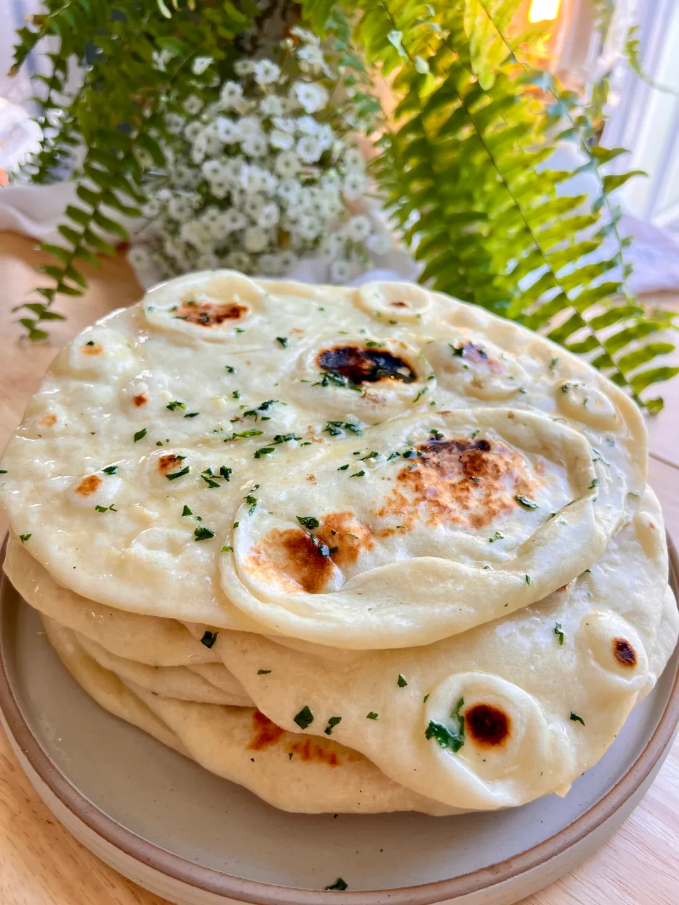

Naan

Description
Naan is a leavened, oven-baked or tawa-fried flatbread, that can also be baked in a tandoor. It is characterized by a light and fluffy texture and golden-brown spots from the baking process. Naan is found in the cuisines of Central Asia, South Asia, Southeast Asia, and the Caribbean.
Composed of white or wheat flour and combined with a leavening agent, typically yeast, naan dough develops air pockets that contribute to its fluffy and soft texture. Additional ingredients for crafting naan include warm water, salt, ghee and yogurt, with optional additions like milk, egg, or honey. Baking powder or baking soda can be used instead of yeast to reduce the preparation time for the bread.
In the baking process using a tandoor, naan dough is rolled into balls, flattened and pressed against the inner walls, which can reach temperatures up to 480 °C (900 °F). This method allows the bread to be baked within minutes, achieving a spotty browning due to intense heat. Naan can be prepared on a stovetop using a tava. The pan may be flipped upside down over the flame to achieve browning on the bread's surface.
Once baked, naan is coated with ghee or butter and served warm. This soft and pliable bread accompanies meals, replacing utensils for scooping up sauces, stews, and curries, or with dryer dishes like tandoori chicken.
Ingredients
- (.25 ounce) package active dry yeast
- cup warm water
- ¼ cup white sugar
- 3 tablespoons milk
- large egg, beaten
- 2 teaspoons salt
- 4 ½ cups bread flour
- 2 teaspoons minced garlic (Optional)
- ¼ cup butter, melted
Steps
- Dissolve yeast in warm water in a large bowl. Let stand about 10 minutes, until frothy.
- Meanwhile, generously oil a large bowl.
- Stir sugar, milk, egg, and salt into the yeast mixture. Mix in enough flour to make a soft dough.
- Knead dough on a lightly floured surface until smooth, 6 to 8 minutes.
- Place dough in the prepared oil, cover with a damp cloth, and let rise until doubled in size, about 1 hour.
- Punch down dough on a lightly floured surface, and knead in garlic. Pinch off small handfuls of dough about the size of a golf ball; you should have about 14. Roll each piece into a ball and place on a tray. Cover with a towel, and allow to rise until doubled in size, about 30 minutes.
- Meanwhile, preheat a large grill pan over high heat.
- Roll each piece of dough into a thin circle.
- Brush some melted butter on the preheated grill pan. Place a few pieces of dough in the pan (as many as you can fit) and cook until puffy and lightly browned, 2 to 3 minutes. Brush butter onto the uncooked sides, flip, and cook until browned, 2 to 4 more minutes. Remove from the grill and repeat to cook the remaining naan.
- Serve and enjoy!
Home